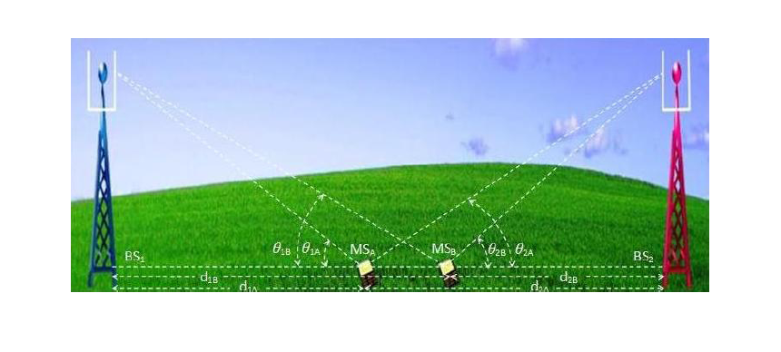

Calculation of SINR including Beam Tilt: Uplink 
Theory
Introduction:
In a communication system especially while consider the physical layer are mainly concerned with signal to noise ratio. However when we look at a system with multipath users or multiple transmission going on simultaneously then usually we need to reuse the radio resource. This re-used radio resource causes co-channel interference to the undesired user.
In cellular system offers the carrier frequency is re used in order to increase capacity. This is explained in details later. So, while one transmitter uses a frequency say and another transmitter which is physically far away from the rest.
Transmitter is assigned the same frequency for transmits information to the target. Thus which one pair of Tx and Rx from the desired link the often Tx act as co-channel interference. This instead of consider only SINR as the metria it is more important to SINR in design of such system.
In cellular communication a carrier frequency is re-used to support a high number of users. Re-use of frequency means that the same frequency may be used simultaneously in two di erent cells for supporting two different active users at the same time. As a result of the simultaneous transmission on the same carrier frequency, interference occurs.
1.1 Uplink SINR:
If the Base Station 1 (BS_1) is connected to Mobile Station A (MS_A) and Base Station 2 (BS_2) is connected to Mobile Station B (MS_B) and BS_1 and BS_2 are residing in co- channel cells where MS_A and MS_B are operating on the same carrier frequency, then, for Base Station 1, MS_A-BS_1 is the desired link and MS_B-BS_1 is the interfering link in uplink and for Base Station 2, MS_B-BS_2 is the desired link and MS_A-BS_2 is the interfering link in uplink and vice-versa.
Considering the following,
P_(T_xA) is the transmit signal power from MS_A,
P_(T_xB) is the transmit signal power from MS_B,
P_(R_x1A) is the received signal power by BS_1from MS_A,
P_(R_x1B) is the received signal power by BS_1from MS_B,
P_(R_x2A) is the received signal power by BS_2 from MS_A,
P_(R_x2B) is the received signal power by BS_2 from MS_B,
P_(N1A) is the received noise power by BS_1 when it is connected to MS_A,
P_(N2B) is the received noise power by BS_2 when it is connected to MS_B,
P_(N1B) is the received noise power by BS_1 when it is connected to MS_B,
P_(N2A) is the received noise power by BS_2 when it is connected to MS_A.

Figure 1. Illustration of Uplink SINR: d_(1A) is the straight line distance parallel to the earth crust between MS_A and BS_1 . d_(2A) is the straight line distance parallel to the earth crust between MS_A and BS_2 . d_(1B) is the straight line distance parallel to the earth crust between MS_A and BS_1 . d_(2B) is the straight line distance parallel to the earth crust between MS_A and BS_2 . theta_(1A) is the angle of the transmission line between MS_A and BS_1 with the straight line between MS_A and BS_1 parallel to the earth crust. theta_(2A) is the angle of the transmission line between MS_A and BS_2 with the straight line between MS_A and BS_2 parallel to the earth crust. theta_(1B) is the angle of the transmission line between MS_B and BS_1 with the straight line between MS_B and BS_1 parallel to the earth crust. theta_(2B) is the angle of the transmission line between MS_B and BS_2 with the straight line between MS_B and BS_2 parallel to the earth crust.
Usually, are given in dBm. So, these parameters are converted into equivalent watt. After obtaining parameters in watt, , , and are calculated using the following formula:
Then,the corresponding are calculated
The above Uplink SINR calculation includes the effects of 2 Mobile Stations at each BS. Proceeding in a similar fashion, the effects of other Mobile Stations can be included in the Uplink SINR calculation for each BS as usually occur in practice for cellular architecture.